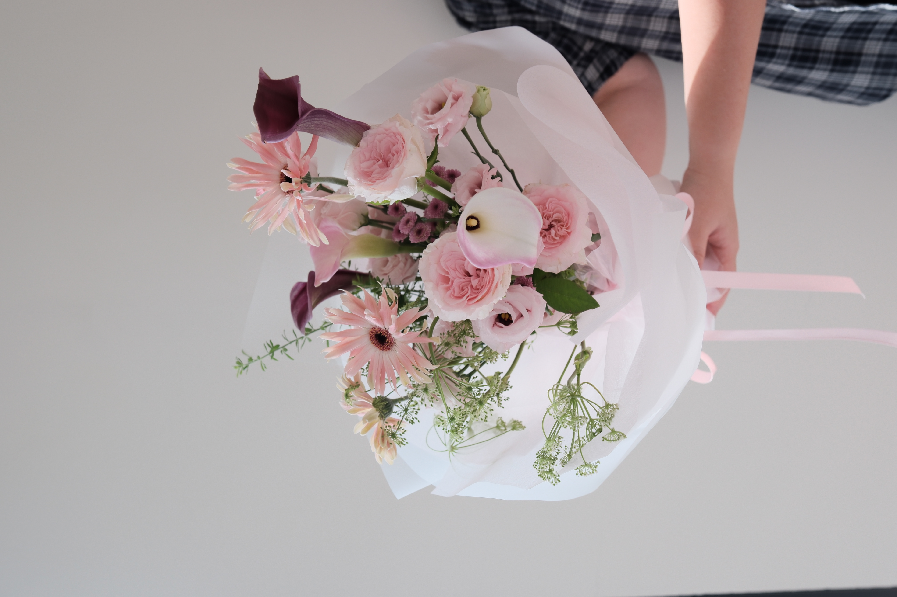
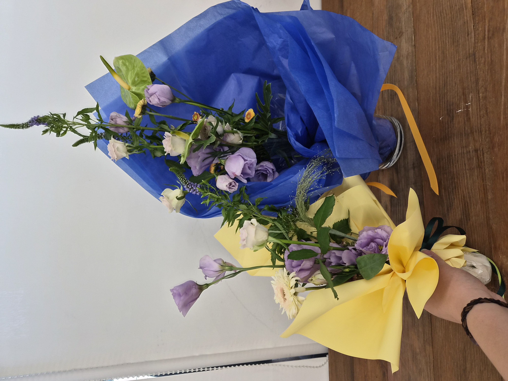
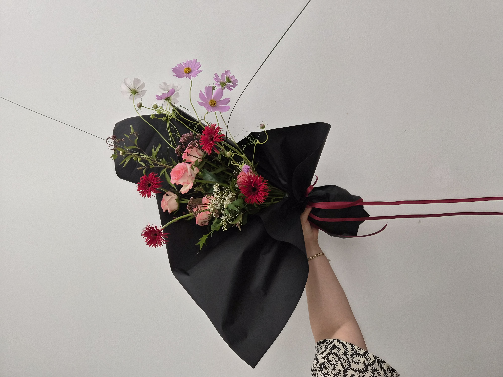

SELF-DIRECTED · BASKET
Warm Classic
Garden Basket
初秋のやわらかな庭
2026.09.11
Birthday Gift
FLORAL ARCHIVE · 2026
制作した花の記録
수업에서 배운 형태와 기법, 그리고 스스로 제작한 작업을 함께 기록합니다.
レッスンで学んだ形や技法と、 自主制作の作品を記録しています。
自主制作
Personal pieces developed outside class, with an emphasis on color, mood and natural movement.
SELF-DIRECTED · BASKET
初秋のやわらかな庭
2026.09.11
Birthday Gift
Self-directed works will continue to be added. 自主制作は随時追加予定です。
レッスン作品
Hand-tied studies focused on form, spiral technique, line, mass and material relationships.
HAND-TIED INTENSIVE COURSE
ハンドタイド集中コース

CLASS WORK · 01
基本的なラウンドブーケ
2026.08.25

CLASS WORK · 02
マスとフィラーの構成
2026.09.01

CLASS WORK · 03
コントラストを生かしたブーケ
2026.09.08

CLASS WORK · 04
線と質感と花の形
2026.09.15

CLASS WORK · 05
フォーマルリニアの構成
2026.09.22

CLASS WORK · 07
UラインとVライン
2026.10.07

CLASS WORK · 08
庭のような自然な構成
2026

CLASS WORK · 09
多彩な花を重ねる構成
2026

CLASS WORK · 10
現代的なフォルムのブーケ
2026
Flowers change.
The record remains.
花は移ろい、記録は残る。
BACK TO HOME